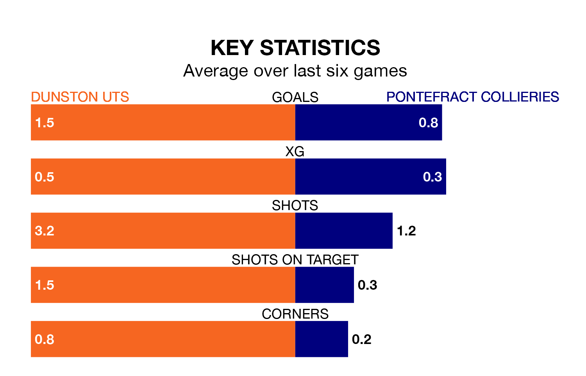

Two of the Northern Premier League Division One East's meanest defences go head-to-head on Saturday, when Dunston UTS host Pontefract Collieries.
Only one side – Stockton Town – has conceded fewer goals than Dunston UTS to date: the home side have let in just 22 goals in 23 games.
Pontefract Collieries have conceded 27 goals in 24 games, giving them the third tightest back line so far this season.
Dunston UTS are third in the table after 23 games, of which they have won 13 and drawn six, earning 45 points.
Pontefract Collieries are two places behind the home team in fifth, with 12 wins and seven draws putting them on 43 points.
In the last 10 years, Dunston UTS and Pontefract Collieries have played each other on six occasions. Dunston UTS won three of them, Pontefract Collieries one, and they drew twice.
On average, Dunston UTS scored 2.5 goals and Pontefract Collieries 1.7 in those matches.
Their last meeting was on October 7, when they played out a 1-1 draw.
Dunston UTS are in mixed form in the Northern Premier League Division One East, with two wins and three draws from their last six games.
And also with two wins and three draws over that period, the visitors' form is identical – they have both taken nine points from 18.
Dunston UTS's last match was on Tuesday, a 1-1 draw against Grantham Town.
Pontefract Collieries drew 0-0 with North Ferriby last time out, also on Tuesday.
Updated: 10:08 (UTC), 23/02/24